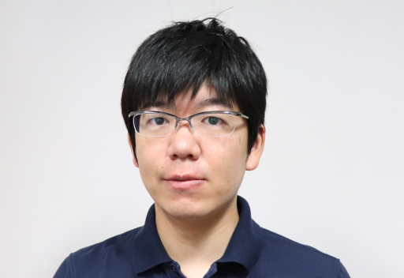

My Photo (May 2014)
Naoki Kita
- Ph.D. Student
- Miyata Laboratory, Japan Advanced Institute of Science and Technology (JAIST)
- Resume
- Email: naoki-ktjaist.ac.jp
- I am a Ph.D. candidate at Japan Advanced Institute of Science and Technology (JAIST). I received my B.S. degree in science from Kanazawa University in 2009, and my M.S. in knowledge science from JAIST in 2011. My current research interests include computational design and human visual perception.
News
- [2017.03] I will attend Laval Virtual 2017 as one of the team member of READi design lab (an exhibitor from L'École de design Nantes Atlantique).
- [2017.02] I join READi Design Lab at L'École de design Nantes Atlantique (Feb 2017 - Nov 2017).
- [2016.11] I will present our poster at SIGGRAPH Asia 2016, Macao.
- [2016.08] Our paper was accepted to PG 2016, Okinawa.
- [2016.07] I present our Element Pattern paper at CGI'16, Greece.
- [2016.04] I participate in the entrance ceremony as a doctoral program student representative.
Publications

Cube Art
Naoki Kita, Kazunori MiyataSIGGRAPH Asia 2016 Posters

Aesthetic Rating and Color Suggestion for Color Palettes
Naoki Kita, Kazunori MiyataComputer Graphics Forum (Pacific Graphics 2016)

Multi-class anisotropic blue noise sampling for discrete element pattern generation
Naoki Kita, Kazunori MiyataThe Visual Computer (CGI'16)

Interactive procedural modeling of pebble mosaics
Naoki Kita, Kazunori MiyataSIGGRAPH Asia 2011 Sketches
[DOI]

A rule-based method for generating bookshelf models
Naoki Kita, Kazunori MiyataSIGGRAPH Asia 2010 Posters
[DOI]

Spider Hero: A VR application using pulling force feedback system
Ken Ishibashi, Toni Da Luz, Remmy Eynard, Naoki Kita, Nan Jian, Hiroshi Segi, Keisuke Terada, Kyohei Fujita, Kazunori MiyataProceedings of the 8th International Conference on Virtual Reality Continuum and its Applications in Industry (VRCAI 2009)
Awards
- Outstanding Poster Award, JAIST HLD International Symposium 2016
- Outstanding Performance Students Award, JAIST, 2011
- Best Paper Award, 10th NICOGRAPH Spring, 2011
- Campus Genius Award SILVER (Interactive), 15th Campus Genius Award, 2010
Funding Sources
- JAIST Grant for Off-Campus Research, Feb 2017 - Nov 2017
- JAIST Doctoral Research Fellowship (DRF), Apr 2016 - Mar 2017
- The Exploratory IT Human Resources Project (THE MITOH Program), Information Technology Promotion Agency Japan (IPA), Feb 2012 - Aug 2012
- JASSO Scholarship for Top 10% Excellent Master Students, Japan Student Services Organization, 2012